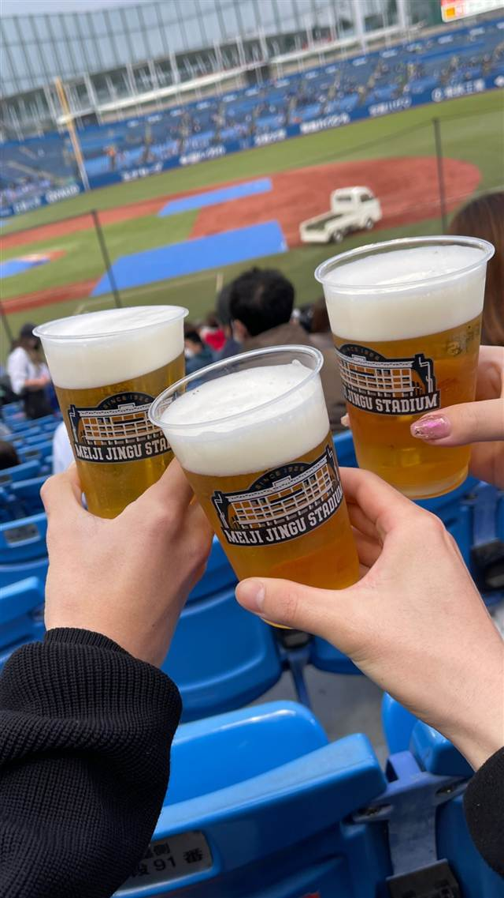

明治神宮野球場
1926年開場、日本最古級の球場で味わうじんカラ
MEIJI JINGU STADIUM
1926年に開場した日本最古級の野球場の一つで、東京ヤクルトスワローズの本拠地でありながら東京六大学野球など複数の野球文化が同居する「野球の聖地」。から揚げの「じんカラ」など球場名物グルメも人気。
TRIVIA
へえ、という話
- 1926年開場で、日本最古級の野球場の一つ
- プロ野球の本拠地でありながら大学野球の優先使用権が今も残る珍しい球場
- 選手の出身地にちなんだ商品など、選手プロデュースの限定グルメがある
| 創業 | 1926年10月22日竣功 |
|---|---|
| 系譜 | 早慶戦の復活や東京六大学野球連盟結成を機に、明治神宮外苑内に建設された。阪神甲子園球場と並ぶ「野球の聖地」とされる |
| 看板 | 球場名物の「じんカラ」（唐揚げ）、「じんカツ」、「じんレモ」などの球場グルメ |
| 場所 | 外苑前 東京都新宿区霞ケ丘町3-1 |
| 注意 | 東京ヤクルトスワローズの本拠地でありながら、東京六大学野球連盟をはじめアマチュア野球にも使われる、プロ野球場としては珍しい共存球場。現在も優先使用権は大学野球連盟が持つ |
食べたもの：神宮球場でビール / 球場ドリンク / 球場の弁当箱
NEARBY
近い店・同じ系統の店
-
 クラフトビール ワイキキ
Yard House Waikiki - Waikiki Beach Walk
1ヤードのビアグラスが店名の由来、地元ハワイ含む50種の生ビール
クラフトビール ワイキキ
Yard House Waikiki - Waikiki Beach Walk
1ヤードのビアグラスが店名の由来、地元ハワイ含む50種の生ビール
-
 クラフトビール 代々木上原
酒処小林 代々木上原
古い木造家屋をモダンに改装した店内で味わう小料理
夜 ¥3,000～¥3,999
クラフトビール 代々木上原
酒処小林 代々木上原
古い木造家屋をモダンに改装した店内で味わう小料理
夜 ¥3,000～¥3,999
-
 クラフトビール 天王洲アイル駅
T.Y.HARBOR
天王洲の築50年超倉庫を改装、自家醸造の西海岸スタイルクラフトビール
夜 ¥5,000～¥5,999
クラフトビール 天王洲アイル駅
T.Y.HARBOR
天王洲の築50年超倉庫を改装、自家醸造の西海岸スタイルクラフトビール
夜 ¥5,000～¥5,999
-
 クラフトビール 麻布十番
あべちゃん 麻布十番店
90年以上続く老舗、3つの大鍋で仕込む牛もつ煮込み
夜 ¥4,000～¥4,999
クラフトビール 麻布十番
あべちゃん 麻布十番店
90年以上続く老舗、3つの大鍋で仕込む牛もつ煮込み
夜 ¥4,000～¥4,999
-
 クラフトビール 三軒茶屋
麦酒宿 まり花 三軒茶屋
12タップの樽生クラフトビールとハムカツ・水餃子のつまみ
夜 ¥2,000～¥2,999
クラフトビール 三軒茶屋
麦酒宿 まり花 三軒茶屋
12タップの樽生クラフトビールとハムカツ・水餃子のつまみ
夜 ¥2,000～¥2,999
-
 クラフトビール 東京駅
NIHONBASHI BREWERY. T.S（日本橋ブルワリー 東京ステーション）
米ポートランドの人気醸造所監修レシピのクラフトビール
昼 ¥1,000～¥1,999 夜 ¥4,000～¥4,999
クラフトビール 東京駅
NIHONBASHI BREWERY. T.S（日本橋ブルワリー 東京ステーション）
米ポートランドの人気醸造所監修レシピのクラフトビール
昼 ¥1,000～¥1,999 夜 ¥4,000～¥4,999